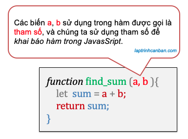
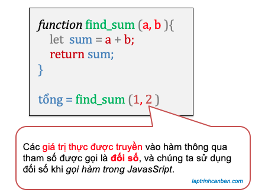
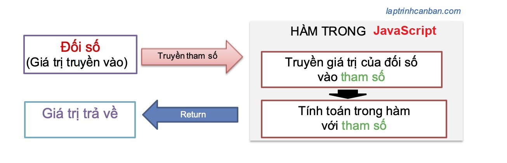
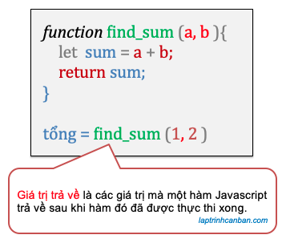

Cùng tìm hiểu về hàm trong javascript hay còn gọi là function trong javascript. Bạn sẽ học được khái niệm hàm trong javascript là gì, cách phân biệt các thành phần sử dụng trong hàm javascript như tham số, đối số và giá trị trả về. Bạn cũng sẽ biết về các hàm trong javascript gồm các hàm có sẵn trong javascript và hàm javascript do người dùng định nghĩa sau bài học này.
Chúng ta cần quan tâm tới ba thành phần sử dụng trong hàm javascript như sau:
- Tham số (Parameter)
- Đối số (Argument)
- Giá trị trả về (Return values)
Và chúng ta cũng cần làm chủ 2 loại hàm trong javascript như sau:
- Hàm có sẵn trong javascript
- Hàm javascript do người dùng định nghĩa
Hãy cùng Kiyoshi làm rõ các kiến thức này ở phần dưới đây.
Hàm trong javascript
Hàm trong javascript là gì
Hàm trong javascript là một tập hợp các xử lý nhằm thực hiện một chức năng cụ thể nào đó trong chương trình. Hàm cho phép bạn kết hợp các xử lý khác nhau thành một và đặt tên cho nó. Sau khi tạo và đặt tên cho một hàm, chúng ta chỉ cần gọi tên hàm ra mỗi khi cần sử dụng đến nó trong chương trình.
Bằng cách kết hợp các xử lý lại thành một hàm, chúng ta không cần viết lại các xử lý nhiều lần, qua đó có thể giảm sai sót khi viết code, cũng như có thể tái sử dụng hàm cho một chương trình khác.
Một hàm có thể nhận một giá trị và trả về một giá trị đã trải qua một số xử lý, do đó nó có khả năng tạo ra công suất tối đa chỉ với lượng mã chương trình tối thiểu.
Không quá lời khi nói rằng làm chủ hàm trong javascript là một kỹ năng cần thiết mà bất kỳ lập trình viên nào cũng cần phải có.
Thành phần trong hàm trong javascript.
Khi học về hàm trong javascript chúng ta cần nắm rõ 3 thành phần của hàm gồm tham số, đối số và giá trị trả về.
Để hình dung ra các thành phần có hàm trong javascript, hãy cùng xem một ví dụ đơn giản về hàm sau đây. Hàm giúp chúng ta tính tổng hai số và trả về kết quả trong chương trình như sau:
function find_sum(x,y){ |
Chúng ta sử dụng từ khóa function trong javascript để khai báo hàm, và các biến có tên như a và b sử dụng khi chúng ta khai báo hàm find_sum() ở trên được gọi là tham số.
Sau khi khai báo một hàm, chúng ta có thể sử dụng hàm đó bằng cách gọi hàm trong javascript như dưới đây:
tổng = find_sum(1,2); |
- Chi tiết về cách cách sử dụng từ khóa function để khai báo hàm trong javascript cũng như là cách gọi hàm trong javascript, bạn hãy xem tại bài viết function trong javascript và cú pháp tạo hàm.
Khi chúng ta gọi hàm trong javascript, chúng ta truyền các giá trị thực như 1 và 2 ở ví dụ trên vào tham số và tính toán trong hàm. Các giá trị thực truyền vào hàm được gọi là đối số, và việc truyền giá trị thực vào hàm để tính toán gọi là truyền tham số trong javascript.
Sau khi hàm được thực thi xong, hàm sẽ trả về cho chúng ta một giá trị, và chúng ta gọi đây là giá trị trả về trong hàm javascript.
Hãy cùng tìm hiểu kỹ hơn về tham số, đối số và giá trị trả về trong javascript ở dưới đây.
Tham số và đối số trong javascript
Tham số là gì | Parameter
Tham số (parameter) là các biến có tên được sử dụng để nhập các đối số vào các hàm. Tham số được sử dụng khi chúng ta khai báo hàm trong javascript.

Có 2 loại tham số trong JavaScript như sau:
- Tham số đầu vào( input parameters) : loại phổ biến nhất được sử dụng để truyền các giá trị vào các hàm.
- Tham số đầu ra( output/return parameters): tham số được sử dụng chủ yếu trả về nhiều giá trị từ một hàm, nhưng không được khuyến khích sử dụng vì chúng dễ gây nhầm lẫn khi viết code.
Đối số là gì | Argument
Đối số (argument) là các giá trị thực được truyền vào hàm. Đối số được truyền vào hàm qua tham số, và được sử dụng khi chúng ta gọi hàm trong javascript.

Tham số và đối số khác nhau như thế nào
Kiyoshi chắc chắn rằng trước khi đọc bài viết này, sẽ có không ít bạn còn mập mờ chưa biết cách phân biệt tham số và đối số trong javascript đâu nhỉ. Tuy nhiên qua những phân tích ở trên, bạn đã hiểu đươc tham số và đối số trong javascript khác nhau như thế nào chưa? Hãy cùng tổng kết sự khác nhau giữa đối số và tham số nhé.
- Tham số của hàm là các biến có tên được liệt kê trong định nghĩa của hàm.
- Đối số của hàm là các giá trị thực được truyền vào hàm.
- Tham số nhận giá trị của các đối số được cung cấp và tính toán trong hàm.
Truyền tham số trong JavaScript
Khi gọi một hàm số trong javascript, chúng ta sẽ truyền các đối số (giá trị thức) vào hàm thông qua các tham số. Việc truyền đối số vào hàm thông qua tham số được gọi là truyền tham số trong JavaScript, và được miêu tả như hình dưới đây:

Giá trị trả về (Return values) trong hàm javascript
Giá trị trả về giống như chính tên của chúng, là các giá trị mà một hàm trả về sau khi hàm đó đã được thực thi xong.

Các giá trị trả về của hàm có thể là một số, một chuỗi, một list hay bất cứ loại dữ liệu nào được quy định khi khai báo hàm.
Tuy nhiên cũng có những hàm không trả về bất cứ giá trị nào từ nó cả. Lúc này về mặc định thì các giá trị trả về sẽ trở thành none, null hoặc undefined.
Để trả về giá trị từ hàm, chúng ta cần dùng tới từ khóa return trong javascript.
Các hàm trong JavaScript
Sau khi đã biết các định nghĩa sử dụng trong hàm javascript, sau đây chúng ta sẽ cùng tìm hiểu các loại hàm trong javascript nhé.
Trong javascript có 2 loại hàm, đó là các hàm có sẵn trong javascript và hàm javascript do người dùng định nghĩa.
Các hàm có sẵn trong JavaScript
Các hàm có sẵn trong javascript là các hàm được chuẩn bị sẵn trong javascript và được tích hợp sẵn sau khi bạn load javascript vào chương trình. Do các hàm này có sẵn trong javascript nên chúng ta có thể sử dụng chúng trực tiếp bằng cách gọi tên chúng khi cần dùng.
Ví dụ, các hàm như hàm console.log(), hàm random(), hàm pop(), hàm sum() v.v.. đều là các hàm có sẵn trong javascript và bạn có thể sử dụng trực tiếp chúng trong chương trình như sau:
chuoi = "Tự học javascript cho người mới bắt đầu"; |
Hàm javascript do người dùng định nghĩa
Hàm javascript do người dùng định nghĩa (user-functionined functions)) là các hàm mà chúng ta tự mình tạo ra bằng cách khai báo chúng trong chương trình. Sau khi khai báo hàm, chúng ta có thể sử dụng chúng trực tiếp trong chương trình hoặc có thể lưu chúng vào trong các file js và để tải và tái sử dụng trong các chương trình khác khi cần thiết.
Hàm javascript do người dùng định nghĩa có ưu điểm rất lớn, đó là sự tự do điều chỉnh hàm theo ý mà bạn muốn, bởi vì hàm là do bạn tự tạo ra, tự bạn thiết kế và làm chủ nó.
Cách khai báo hàm trong javascript cũng khá là đơn giản, chúng ta sử dụng từ khóa function và khai báo tên hàm cũng như các câu từ khóa xử lý trong hàm ở bên trong khối function đó. Ví dụ, bạn có thể tự tạo một hàm tìm tổng của hai số như sau:
function find_sum(x,y){ |
Cách sử dụng hàm javascript do người dùng định nghĩa cũng giống như các hàm khác, sau khi bạn đã khai báo hàm xong, chỉ cần gọi tên hàm khi cần sử dụng là xong.
c = find_sum(1,2); |
- Chi tiết về cách cách sử dụng từ khóa function để khai báo hàm trong javascript cũng như là cách gọi hàm trong javascript, bạn hãy xem tại bài viết function trong javascript.
Tổng kết
Trên đây Kiyoshi đã hướng dẫn bạn về hàm trong javascript hay còn gọi là function trong javascript rồi. Để nắm rõ nội dung bài học hơn, bạn hãy thực hành viết lại các ví dụ của ngày hôm nay nhé.
Và chúng ta sẽ tiếp tục học về cách khai báo và gọi hàm trong javascript tại bài học tiếp theo.
URL Link
HOME › học javascript - lập trình javascript cơ bản>>08. hàm trong javascript